第二章 Burp Suite代理和浏览器设置
Burp Suite代理工具是以拦截代理的方式，拦截所有通过代理的网络流量，如客户端的请求数据、服务器端的返回信息等。Burp Suite主要拦截http和https协议的流量，通过拦截，Burp Suite以中间人的方式，可以对客户端请求数据、服务端返回做各种处理，以达到安全评估测试的目的。
在日常工作中，我们最常用的web客户端就是的web浏览器，我们可以通过代理的设置，做到对web浏览器的流量拦截，并对经过Burp Suite代理的流量数据进行处理。
下面我们就分别看看IE、Firefox、Google Chrome下是如何配置Burp Suite代理的。
IE设置
当Burp Suite 启动之后，默认分配的代理地址和端口是127.0.0.1 ：8080,我们可以从Burp Suite的proxy选项卡的options上查看。如图： 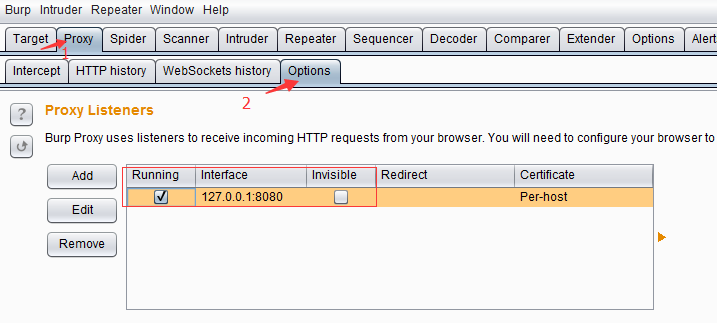 现在，我们通过如下步骤的设置即可完成IE通过Burp Suite 代理的相关配置。
- 启动IE浏览器
- 点击【工具】菜单，选择【Internet】选项 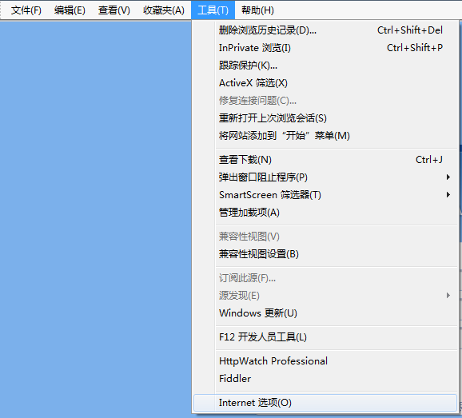
- 打开【连接】选项卡，点击【局域网设置】，进行代理设置。 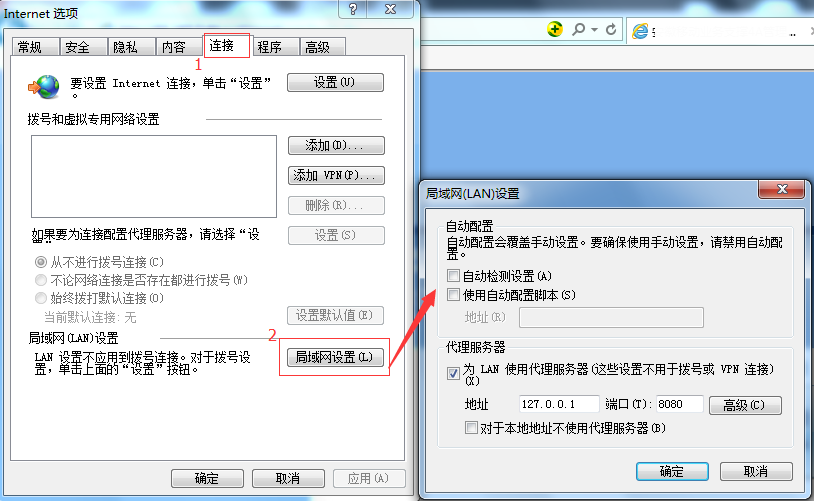
- 在代理服务器设置的地址输入框中填写127.0.0.1,端口填写8080，点击【确定】，完成代理服务器的设置。 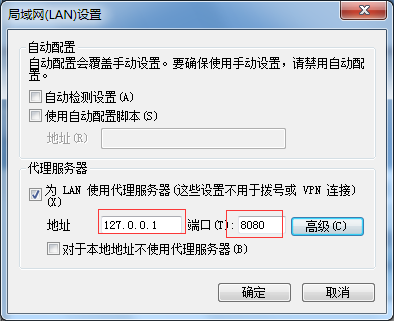
- 这时，IE的设置已经完成，你可以访问 http://burp 将会看到Burp Suite的欢迎界面。 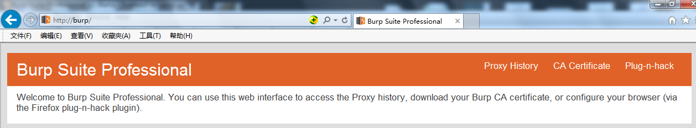
FireFox设置
与IE的设置类似，在FireFox中，我们也要进行一些参数设置，才能将FireFox浏览器的通信流量，通过Burp Suite代理进行传输。详细的步骤如下：
- 启动FireFox浏览器，点击【工具】菜单，点击【选项】。 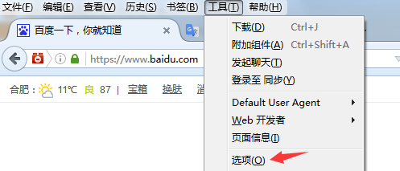
- 在新打开的about:preferences#advanced窗口中，依次点击【高级】-【网络】，我们将会看到FireFox连接网络的设置选项。 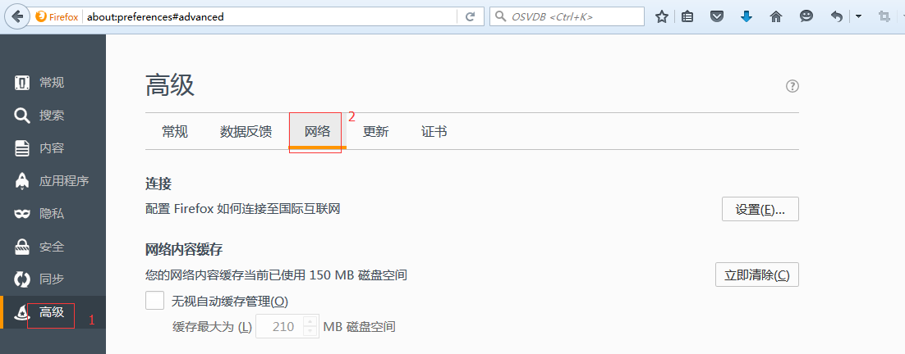
- 点击【设置】，在弹出的【连接设置】对话框中，找到“http代理”，填写127.0.0.1，端口填写8080，最后点击【确认】保存参数设置，完成FireFox的代理配置。 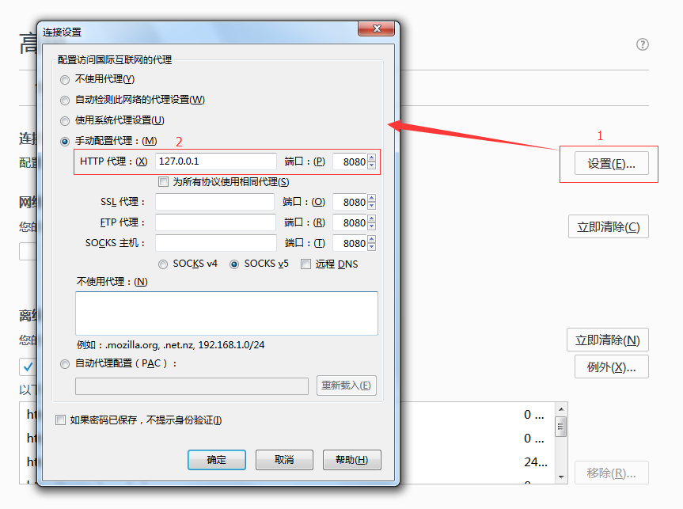 当然，FireFox浏览器中，可以添加FireFox的扩展组件，对代理服务器进行管理。例如FireX Proxy、Proxy Swither都是很好用的组件，感兴趣的读者可以自己下载试用一下。
Google Chrome设置
Google Chrome使用Burp Suite作为代理服务器的配置步骤如下：
- 启动Google Chrome浏览器，在地址栏输入chrome://settings/，回车后即显示Google Chrome浏览器的配置界面 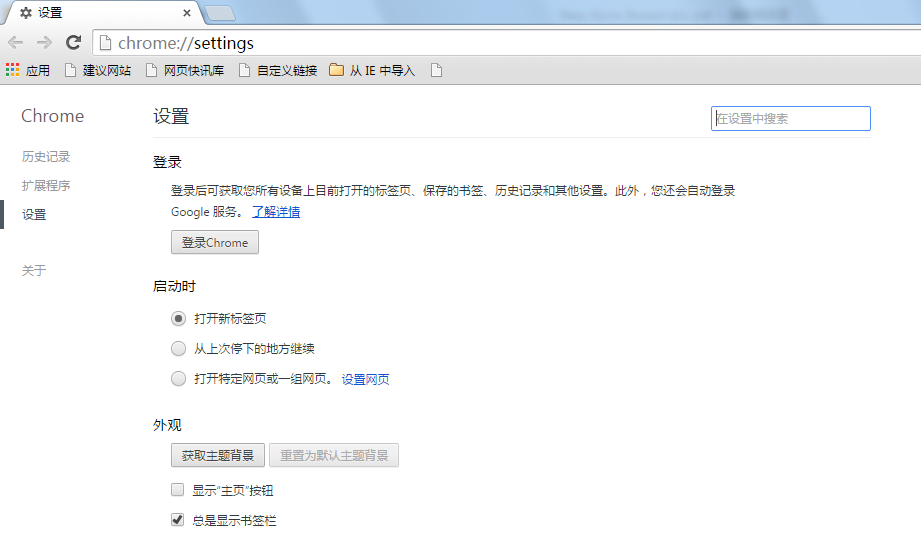
- 点击底部的【显示高级设置】，将显示Google Chrome浏览器的高级设置。 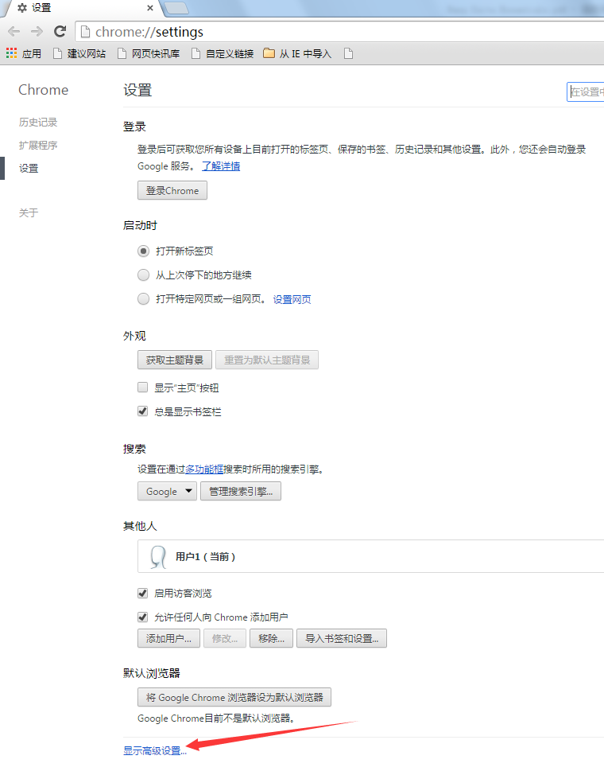
- 当然，你也可以直接在搜索框中输入“代理”，回车后将自动定位到代理服务器设置功能。 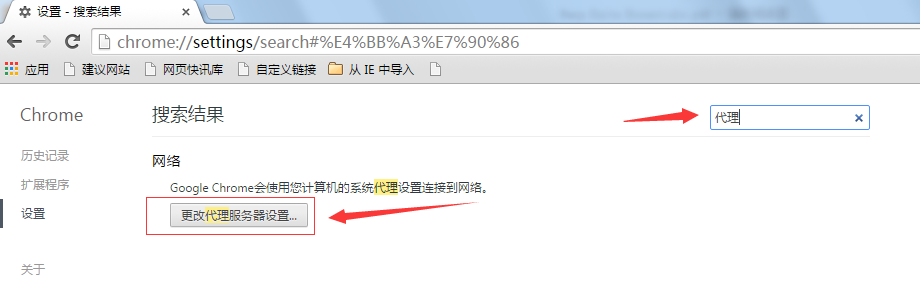
- 点击【更改代理服务器设置】，windows系统下将会弹出IE浏览器的代理设置，此时，按照IE浏览器的设置步骤，完成代理服务器的配置即可。
除了上述的三种常用的浏览器外，还有Safari浏览器也有不少的用户在使用，其代理配置请点击阅读进行查看。